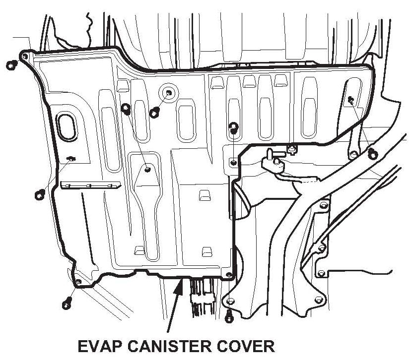
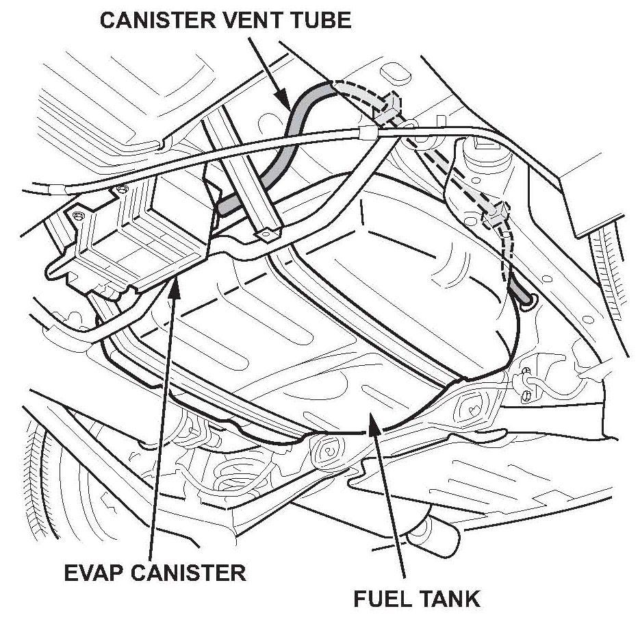
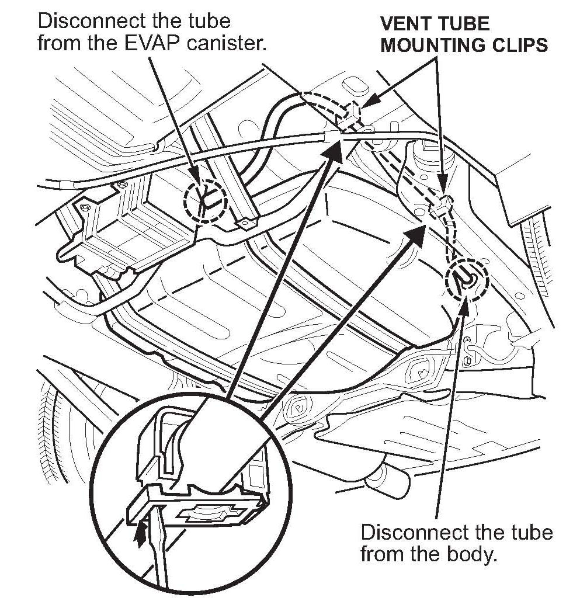
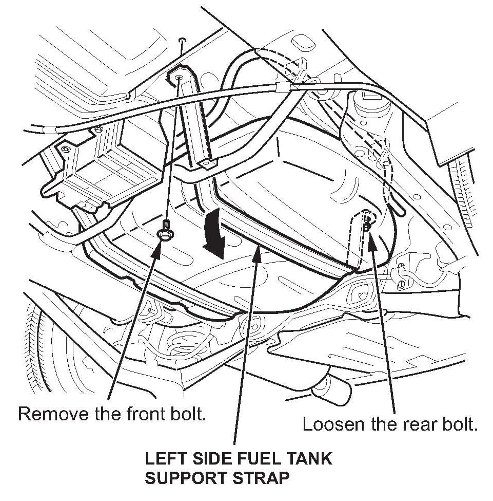
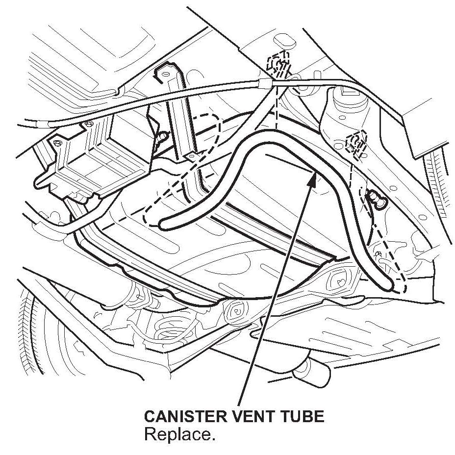

Emissions - MIL ON/DTC P2422 Set
11-036August 4, 2011
*Applies To:
2006-11 Civic - ALL except Si and GX
2006-11 Civic Si - ALL*
MIL Comes On With DTC P2422
(Supersedes 11-036, dated June 15, 2011, to revise the information marked by the asterisks)
*REVISION SUMMARY
In Applies To, Si models were added.*
SYMPTOM
The MIL is on with DTC P2422 (EVAP canister vent shut valve stuck closed malfunction).
PROBABLE CAUSE
Spider webs are clogging the EVAP canister vent tube.
CORRECTIVE ACTION
Replace the EVAP canister vent tube.
PARTS INFORMATION
Canister Drain Tube (2007-11 models):
P/N 17744-SNA-A01
Canister Drain Tube (2006 models):
P/N 17744-SNA-A10
WARRANTY CLAIM INFORMATION
The normal warranty applies.
Operation Number: 1200A1
Flat Rate Time: 0.3 hour
Failed Part: 17744-SNA-A00
Defect Code: 05401
Symptom Code: 03203
Skill Level: Repair Technician
REPAIR PROCEDURE
1. Raise the vehicle on a lift.

2. Remove the EVAP canister cover.

3. Locate both ends of the EVAP canister vent tube.

4. Detach the vent tube mounting clips.
5. Disconnect the vent tube from the EVAP canister and the fitting on the body.

6. Remove the left front fuel tank support strap bolt, and loosen the rear bolt.

7. Remove the original EVAP canister vent tube, and install the replacement tube in its place.
8. Reinstall the left front fuel tank support strap bolt, and torque both strap bolts to 38 N.m (28 lb-ft).
9. Connect the vent tube to the EVAP canister and the fitting on the body.
10. Secure the vent tube with the mounting clips.
11. Reinstall the EVAP canister cover.
12. Clear the DTC with the HDS, then run the EVAP system function test.
Does the vehicle pass the EVAP system function test?
Yes - The repair is complete.
No - There are other problems with the EVAP system. Continue with normal troubleshooting procedures.

Disclaimer